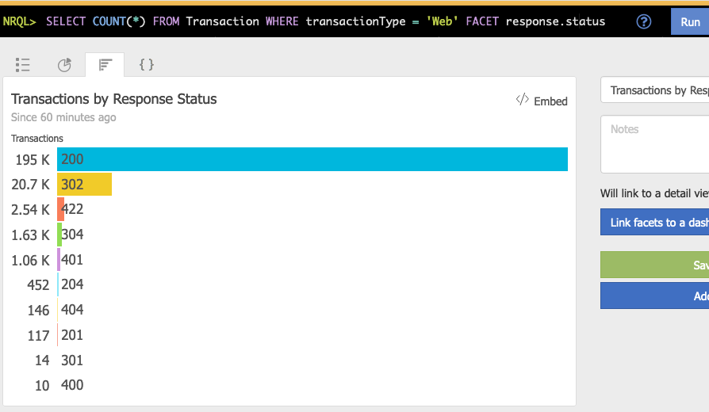

Guide
This guide provides a walkthrough for getting started with using New Relic Dashboard builder to define and manage your New Relic dashboards.
Basic Query and Dashboard Definitions
New Relic dashboards are composed of one or more widgets. Each widget has a size and location on the dashboard as well as an NRQL query that defines the data that is displayed by the widget.
Suppose we wanted to create a dashboard consisting the following widget:

This dashboard could be defined in a YAML definition file as
dashboards:
sample-dashboard:
title: Sample Dashboard
widgets:
- widget:
query:
title: Transactions by Response Status
nrql: SELECT COUNT(*) FROM Transaction WHERE transactionType = 'Web' FACET response.status
visualization: facet_bar_chart
row: 1
column: 1
width: 3
height: 2